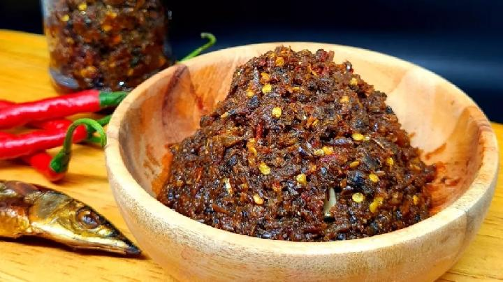

Sambal Roa
Sambal Roa adalah sambal khas dari Manado yang terbuat dari ikan roa asap yang disuwir dan dicampur dengan cabai, bawang, serta tomat. Sambal ini memiliki rasa pedas, gurih, dan aroma asap yang khas, sehingga sangat cocok disantap bersama nasi hangat atau makanan khas Manado lainnya seperti tinutuan dan ikan bakar.
Bahan-bahan:
- 5–10 ekor ikan roa asap (disuwir halus)
- 10 buah cabai merah keriting
- 10–15 cabai rawit (sesuai selera pedas)
- 6 siung bawang merah
- 3 siung bawang putih
- 2 buah tomat merah
- 1 sdt garam
- 1/2 sdt gula pasir
- 1/2 sdt kaldu bubuk (opsional)
- 3–5 sdm minyak goreng
Cara Membuat:
-
Siapkan ikan roa
Goreng sebentar atau panaskan ikan roa, lalu suwir halus. -
Haluskan bumbu
Ulek atau blender kasar cabai merah, cabai rawit, bawang merah, bawang putih, dan tomat. -
Tumis bumbu
Panaskan minyak, lalu tumis bumbu halus sampai harum dan matang. -
Masukkan ikan roa
Tambahkan ikan roa suwir, aduk rata. -
Tambahkan bumbu
Masukkan garam, gula, dan kaldu bubuk. Koreksi rasa. -
Masak hingga matang
Masak sampai sambal agak kering dan minyak keluar. -
Sajikan
Angkat dan sajikan dengan nasi hangat.